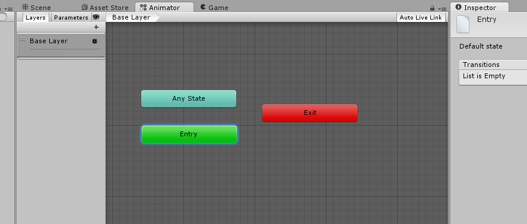

The Animator window allows you to add animation clips, triggers, and control the flow of the animation sequences.
You can open the Animator window by double clicking on your new Animator Controller, created in the previous step.

Inside the window, you have the following default events:
Any State
Entry
Exit
Entry is the start point, and will auto-link with your first animation clip you enter. This sets up the default animation that will be played when the Animator is activated.
Any State allows us to add animations that can be fired from any other event or trigger. For example, to allow jumping and attacking from any state, you'd link those animation clips to Any State.
Exit is the end point, and causes the Animator controller to exit. In the Unity Editor window, Exit will immediately loop back to Entry.
Under the Scene tab, you'll see two other options: Layers and Parameters.
Layers - This allows you to sort complex animations, such as if the bottom torso of your avatar must behave independently from your top of the avatar. We'll be using the default base layer for this tutorial.
Parameter - This allows you to trigger events for your animator to execute. A Parameter can be a float (0.0), Integer (1,2,3,etc) a bool (true / false ) or a Trigger ("Attack"). We'll be using Parameters for state machine.
You can click on any State and move it around the panel by dragging it.
You may hold down Alt, and click to drag and move the window around as well.
Created with the Personal Edition of HelpNDoc: Easily create Web Help sites